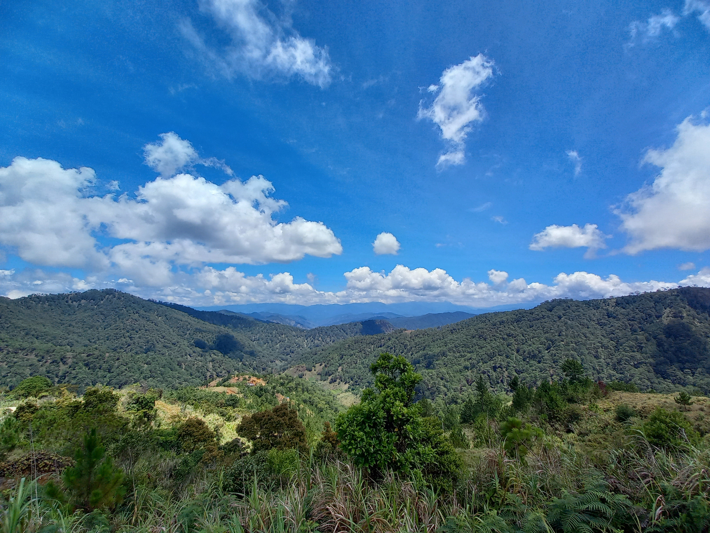
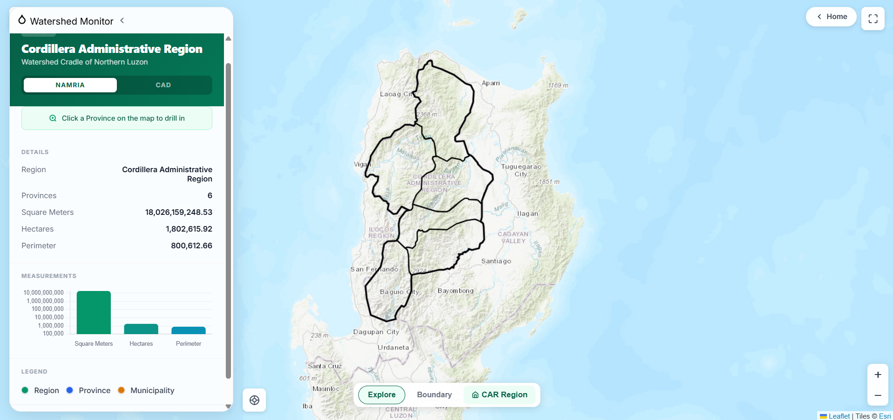
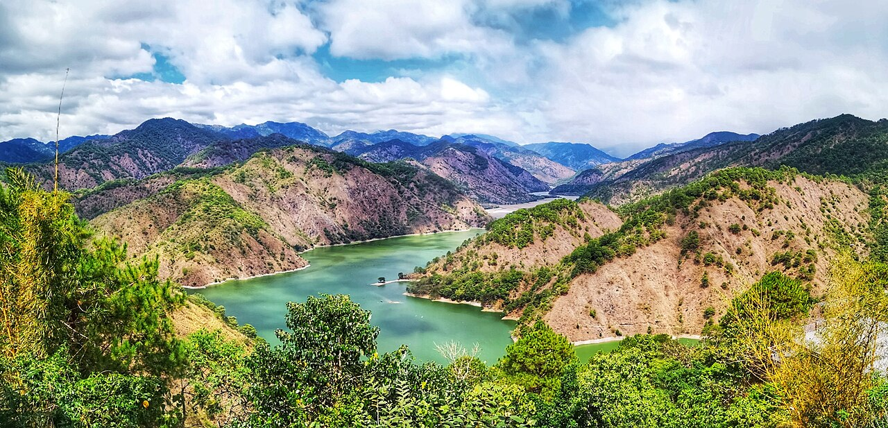
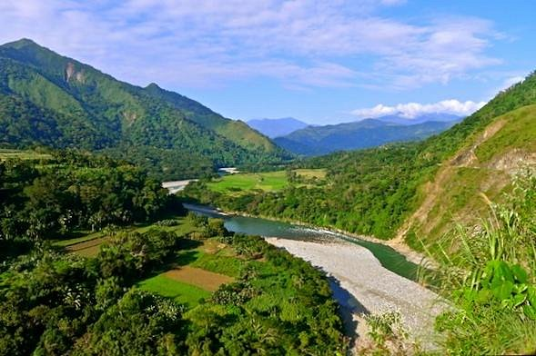
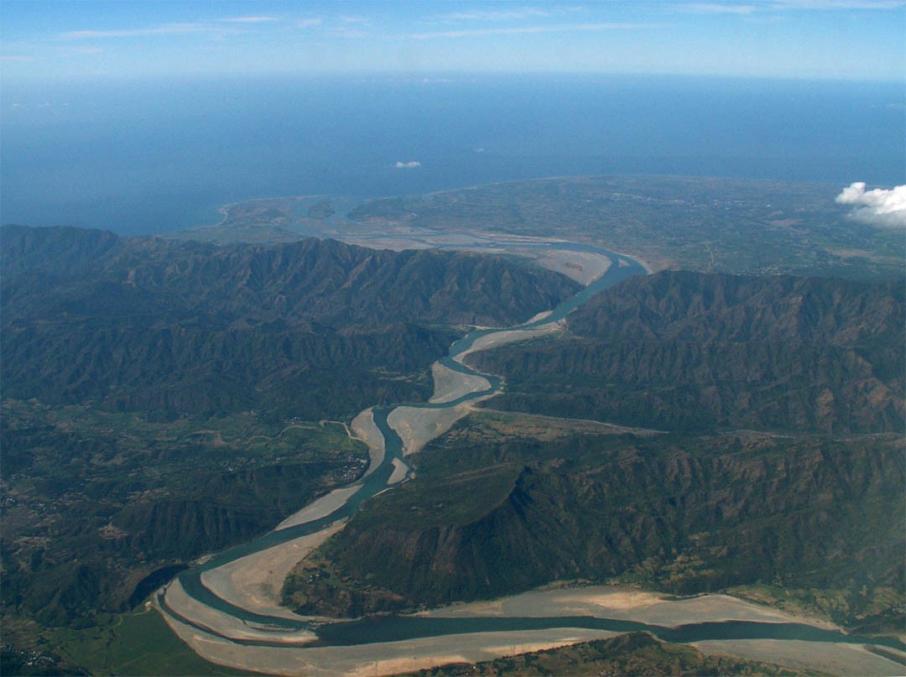
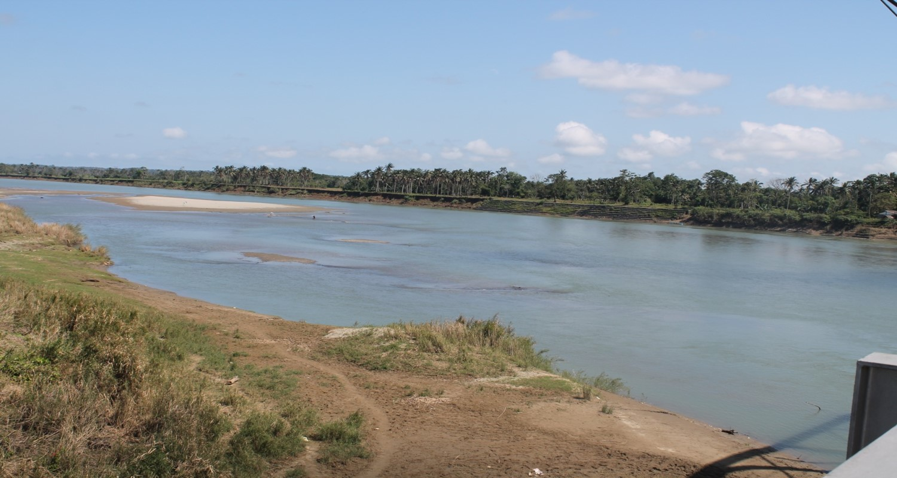
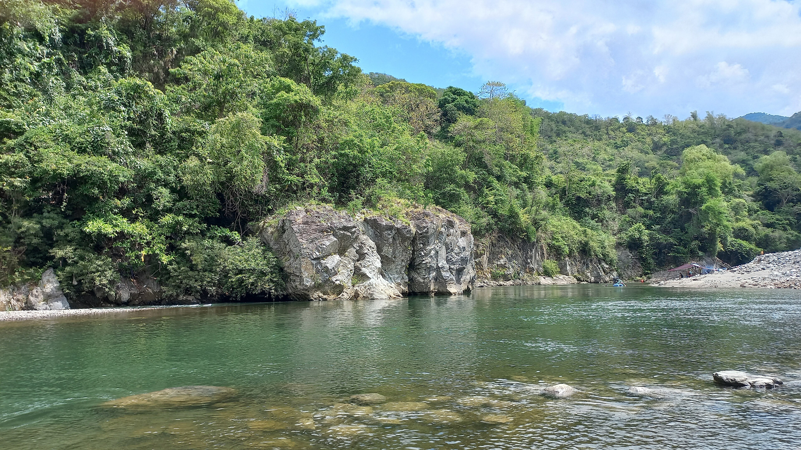

CAR Watershed Monitoring
Tracking administrative boundaries, geological data, and environmental metrics across the Cordilleras — the Watershed Cradle of Northern Luzon.

Protecting Our Lifelines
The Cordillera Administrative Region serves as the watershed cradle of Northern Philippines, supplying vital water resources to the lowlands. The Department of Environment and Natural Resources' mandate is to monitor, protect, and sustain these ecological boundaries that support millions of Filipinos across Regions I, II, and III.
A watershed is an area of land where all water drains to a common outlet such as a river, lake, or sea. Healthy watersheds mean clean water, productive fisheries, and resilient communities. Through systematic monitoring, we track changes in land use, water quality, and biodiversity across CAR's major river basins.

Major River Basins of CAR
The Cordillera Administrative Region hosts 13 major river basins — the Watershed Cradle of Northern Luzon.

Agno River Basin
Originates in the Cordillera mountains of Benguet, specifically Mount Data. It is the fifth largest river system in the Philippines and a vital resource for Northern Luzon. It supports three major hydroelectric plants: Ambuklao, Binga, and San Roque. The basin supplies extensive irrigation for the agricultural plains of Pangasinan, serving as the lifeblood for local farming communities, fisheries, and regional power generation.

Chico River Basin
Headwaters are located in the mountains of Benguet, Mountain Province, and Kalinga. Known as the 'River of Life' for the Kalinga people, it spans a vast area before merging with the Cagayan River. It supports numerous mini-hydro power plants and provides essential irrigation for rice terraces and farmlands across Kalinga, Apayao, Cagayan, and Isabela.

Abra River Basin
Originates from the slopes of Mount Data in Benguet and runs through Mountain Province and Abra before emptying into the West Philippine Sea. It is one of the five largest river systems in the Philippines, featuring deep gorges and wide valleys. The basin provides crucial irrigation for Ilocos Sur and Abra, supporting local agriculture and inland fisheries.

Abulog River Basin
Also known as the Abulug-Apayao River Basin, its headwaters lie deep within the mountainous province of Apayao. It is characterized by pristine forest cover and a wide river channel that flows down to the Babuyan Channel. It serves as a critical source of irrigation for the plains of northern Cagayan Province and sustains local aquatic biodiversity.


Interactive Geographic Dashboard
Dive into the data. Explore administrative boundaries, river networks, and geological profiles across the Cordillera Administrative Region.